Using the DataSense Explorer
Anypoint Studio includes a DataSense Explorer that surfaces information about the Mule message as it passes through your flow. The DataSense explorer lists information about the message payload, flow variables, session variables, inbound properties, and outbound properties of your message, relative to the building block you currently have selected on the canvas.
Use the DataSense Explorer at design-time to:
-
Get quick insight into the contents of your payload and all of its metadata to ensure your message carries the information that later processing steps in your flow require
-
Understand how message processors act upon your message by comparing the state of the message before and after each building block processes it
-
Work with DataWeave to confirm that the input and output values of your transformed data match the expected values
-
Work with a message enricher scope to verify your enricher has successfully added the expected data to your message
Prerequisites
This document assumes you are familiar with Mule ESB and the Studio interface. Further, it assumes you have read the Mule Message Structure document to understand the contents of a Mule message. To increase your familiarity with Studio, consider reading Anypoint Studio Essentials.
Basic Anatomy
The DataSense Explorer is a panel that appears in the lower right corner of the default Mule perspective in Anypoint Studio. You can toggle it on and off using the icon.
As you select the building blocks on the Message Flow canvas, the DataSense Explorer displays information on the In tab about the payload, flow variables, session variables, inbound properties, and outbound properties that Mule detects as the message arrives at that building block.
Observe, for example, how the outbound properties differ from the moment when the message arrives at a Property Transformer to the moment when the message leaves the Property Transformer (see images below).
Before:
After:
Example
This simple example illustrates how, when you manipulate your message using enrichers and transformers, the DataSense Explorer tracks the effects of the message processors on the payload and metadata of your message as it passes through your flow.
Studio Visual Editor
XML Editor
<?xml version="1.0" encoding="UTF-8"?>
<mule xmlns:tracking="http://www.mulesoft.org/schema/mule/ee/tracking" xmlns:http="http://www.mulesoft.org/schema/mule/http" xmlns="http://www.mulesoft.org/schema/mule/core" xmlns:doc="http://www.mulesoft.org/schema/mule/documentation"
xmlns:spring="http://www.springframework.org/schema/beans" version="EE-3.6.0"
xmlns:xsi="http://www.w3.org/2001/XMLSchema-instance"
xsi:schemaLocation="http://www.springframework.org/schema/beans http://www.springframework.org/schema/beans/spring-beans-current.xsd
http://www.mulesoft.org/schema/mule/core http://www.mulesoft.org/schema/mule/core/current/mule.xsd
http://www.mulesoft.org/schema/mule/http http://www.mulesoft.org/schema/mule/http/current/mule-http.xsd
http://www.mulesoft.org/schema/mule/ee/tracking http://www.mulesoft.org/schema/mule/ee/tracking/current/mule-tracking-ee.xsd">
<http:listener-config name="listener-config" host="localhost" port="8081" doc:name="HTTP Listener Configuration"/>
<flow name="datasense-explorerFlow1" >
<http:listener config-ref="listener-config" path="/" doc:name="HTTP Connector"/>
<set-payload value="#[["Hello", "World"]]" doc:name="Set Payload"/>
<set-variable variableName="timestamp" value="#[server.dateTime]" doc:name="SetTimestamp"/>
<enricher doc:name="Message Enricher" source="#[message.payload.color]" target="#[flowVars['colorchoice']]">
<processor-chain doc:name="Processor Chain">
<flow-ref name="datasense-explorerFlow2" doc:name="Flow Reference"/>
<logger level="INFO" doc:name="Logger 2"/>
</processor-chain>
</enricher>
<logger level="INFO" doc:name="Logger 3"/>
</flow>
<flow name="datasense-explorerFlow2" >
<set-payload value="#[["type":"shoe","size":20,"color":"blue"]]" doc:name="Set New Payload"/>
<logger level="INFO" doc:name="Logger 1"/>
</flow>
</mule>The table below tracks the message state as it arrives at each building block shown on the canvas.
| When the message arrives at the… | The message state is… | Because… |
|---|---|---|
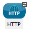 |
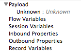 |
At the point that the message arrives at the HTTP inbound connector, Mule does not yet have any information about the payload or its metadata. |
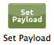 |
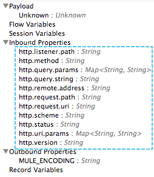 |
The message leaves the inbound connector with a set of inbound properties that are set by the message source (HTTP) and one outbound property reflecting the default encoding type. |
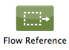 |
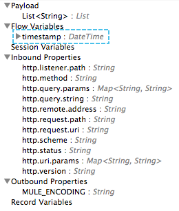 |
The previous message processor set a payload of type List, which DataSense Explorer now reflects as the message arrives at the following message processor. |
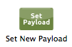 |
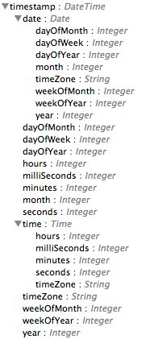 |
In the previous step, the Variable Transformer set a flow variable called timestamp, which is now visible in the DataSense explorer as the message reaches this flow reference building block. |
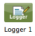 |
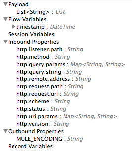 |
Note that you can expand the timestamp variable to view all the components accessible via the #[server.dateTime] expression used for this variable. |
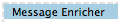 |
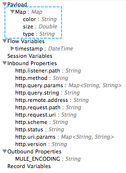 |
The flow reference in the previous step sent the message to a new flow. |
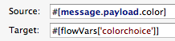 |
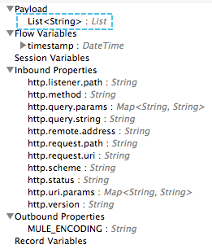 |
The Set Payload transformer in the previous step set the payload as a map with three elements. DataSense Explorer shows the map keys and types. |
|
|
When processing finishes in the flow referenced by the flow reference element, the message returns to the original flow with its newly set payload. |
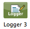 |
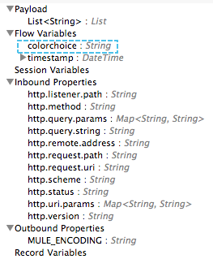 |
The Enricher acts on the message after processing within its scope is completed. Click the Message Enricher header bar to view the message as it is about to be enriched. Note that the Payload is once again a List, because the Enricher inputs and outputs the payload from the message processor before its scope, not from the contents of its scope. However, the configuration of the enricher acts upon the contents of its scope. In this case, the enricher extracts the key "color" from the map and sets it as a flow variable, "colorchoice": The results are visible in the DataSense Explorer in the next building block. |
|
|
Observe that the flow variable colorchoice, added by the Enricher, now appears in the DataSense Explorer. |
Tips
-
The DataSense Explorer displays only the payload and metadata information that Anypoint Studio can determine at design-time. Thus, for example, imagine you set a session variable on the message in one flow. That session variable is not visible in the DataSense Explorer in another flow within the same application because at design-time, Studio cannot determine the message origin of a flow or subflow and thus cannot predict whether the session variable would propagate to that flow. To observe the details of how your session variables move through your message, use the Visual Debugger to inspect your message in a controlled test run of your application.
-
Hover over the items listed in the DataSense Explorer for more information. For properties or variables that you set explicitly in your flow with transformers and enrichers, the hovertext indicates the name of the building block earlier in the flow that was responsible for adding that metadata.
See Also
-
Learn more about the Mule message and how to work with it.
-
Work through the Mule Message Tutorial to learn more.
-
Need more information about the payload or metadata? Try running your application in Debug mode to inspect your message contents step by step at runtime.
-
Get familiar with Mule Expression Language so that you can access and manipulate the contents of your message and its environment.